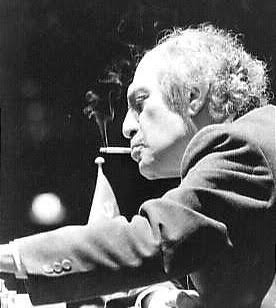
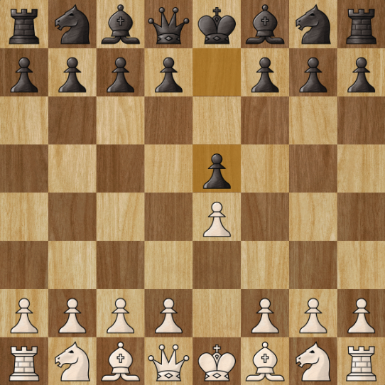
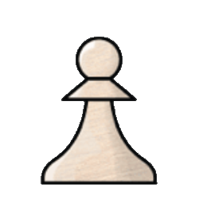
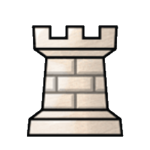

O xadrez é um jogo de tabuleiro atemporal considerado como esporte, e é mundialmente famoso e jogado por milhões de pessoas desde o século XIX.
A origem real do xadrez se dá na Índia, por volta do século VI, tendo como nome inicial Chaturanga e significa "os quatro elementos de um exército": infantaria, cavalaria, elefantes e carruagens.
A partir da Índia, o jogo expandiu-se para a Pérsia, (onde surgiu a expressão "Xeque-Mate") e chegou à Europa durante a Idade Média. No continente europeu, durante o Renascimento, que as regras modernas foram consolidadas, como o movimento ampliado da Dama e a adição do roque, tornando o jogo mais dinâmico.
Grande Mestre de Xadrez, o americano Robert James "Bobby" Fischer foi o décimo primeiro campeão mundial de xadrez em 1972, sendo o primeiro e único campeão nascido nos Estados Unidos. Aos 14 anos ele venceu a chamada "Partida do Século" contra Donald Byrne. Ainda aos 14 anos Fisher participou de oito campeonatos de xadrez dos Estados Unidos, e venceu todos com pelo menos um ponto de vantagem sobre seus oponentes, e se tornou o Grande Mestre mais novo da história.
Em 1972, no auge da Guerra Fria, Fischer quebrou décadas de hegemonia soviética ao vencer o campeão mundial Boris Spassky no lendário confronto em Reykjavik.
Oitavo Campeão Mundial de Xadrez, o soviético nascido na Letônia ficou conhecido como o "Mago de Riga". Tal revolucionou o xadrez na década de 1960 com um estilo extremamente agressivo, tático e intuitivo. Ele era famoso por realizar sacrifícios espetaculares de peças para criar complicações psicológicas e posicionais no tabuleiro, confundindo até os defensores mais calculistas. Em 1960, aos 23 anos, tornou-se o campeão mundial mais jovem da história até aquele momento ao derrotar Mikhail Botvinnik.

Mestre Internacional, o americano é considerado o "Professor de xadrez da internet", com seu canal Gotham Chess no youtube contando com oito milhões de inscritos e mais de 6 bilhões de visualizações, é o maior criador de conteúdo de xadrez do mundo. Além de ter publicado diversos livros como"How to Win at Chess: The Ultimate Guide for Beginners and Beyond", também como sua plataforma digital Chessly , Levy consegue ajudar milhões de pessoas no mundo todo.
Grande Mestre norueguês, Sven Magnus Øen Carlsen tornou-se prodígio ao atingir o título de GM aos 13 anos. Em 2013, sagrou-se Campeão Mundial ao derrotar Viswanathan Anand, mantendo o título supremo até 2023, ano em que decidiu abdicar voluntariamente da defesa do trono clássico por falta de motivação.
Amplamente considerado o jogador mais completo de todos os tempos, Carlsen alcançou em 2014 o pico histórico de 2882 pontos de Rating Elo, a maior pontuação alguma vez registada na história do xadrez. Destaca-se pelo seu estilo de jogo universal, precisão cirúrgica e uma habilidade extraordinária para converter finais aparentemente empatados em vitórias, além de deter a incrível marca de 125 partidas consecutivas invicto no xadrez clássico.
Como todos os esportes, no xadrez existem regras e fundamentos que são essenciais para o jogo funcionar.
O tabuleiro é composto por um quadrado de 8x8, com 32 casas claras e 32 casas escuras, compondo tambem suas coordenadas, que são utilizadas para a identificação das posições das peças durante um jogo, como na clássica abertura e4 & e5.

No xadrez, as peças brancas sempre começam, o que significa que o jogador de brancas possui uma leve vantagem, por ter uma amplitude maior de aberturas e estratégias para começar o jogo. Entretanto, o jogador de pretas não está necessariamente em desvantagem, podendo tambem utilizar de diversas aberturas para se defender e contra-atacar o jogador de brancas.
No começo do jogo, as brancas tem exatamente 20 possibilidades de lances (16 com os peões e 4 com os cavalos), recebendo uma resposta de 20 possíveis lances das pretas.
Após o primeiro lance dos dois lados, existem 400 combinações possíveis de lances. Durante um jogo médio de xadrez, existem mais possíveis jogadas do que átomos no universo observável (10120 e 1080).
| Peça | Valor | Função |
|---|---|---|
|
 |
1 ponto. | Os peões andam somente uma casa para frente, podendo andar duas apenas no começo do jogo. |
| 3 pontos. | O cavalo é a única peça que pode pular sobre as demais peças, movendo-se em formato de "L" | |
| 3 pontos. | O bispo move-se somente em diagonais, mas sem limitação de distância. Bispos de cores diferentes nunca terão visão um do outro. |
| Peça | Valor | Função |
|---|---|---|
|
 |
5 pontos. | A torre se move horizontal e verticalmente, sem limitação de distância. |
| 9 pontos. | Como a torre e o bispo, a dama consegue se mover horizontalmente, verticalmente e nas diagonais, sem limite de distância. | |
| Infinito. | O rei pode se mover somente uma casa, em um quadrado de 3x3. Possui pouco valor no começo do jogo mas se torna uma peça essencial no fim do jogo. |